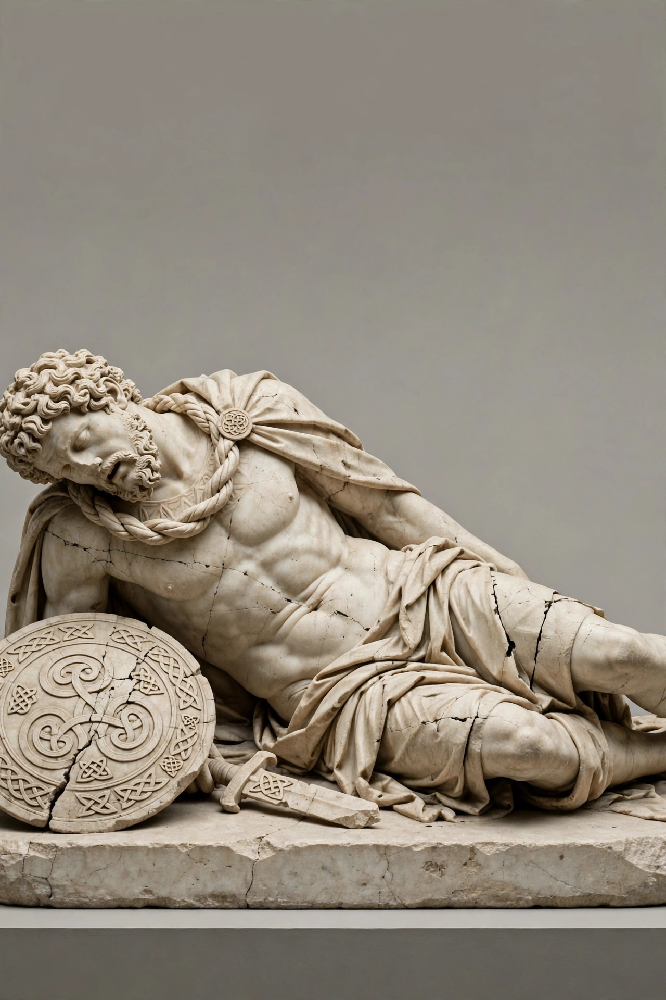

Galatians
| Galatians | |
|---|---|
| Region | Galatia, central Anatolia (modern Turkey) |
| Arrival in Anatolia | 278 BC |
| Ethnicity | Celtic (Gallic) tribes: Tectosages, Tolistobogii, Trocmi |
| Language | Galatian (a Celtic language, extinct by late antiquity) |
| Capitals | Ancyra, Pessinus, Tavium |

The Galatians were a Celtic people who migrated from the Balkans into central Anatolia in the third century BC and gave their name to the region of Galatia. They were descended from the Gallic tribes whose invasion of Greece was repulsed at Delphi in 279 BC; a portion of the host, some 20,000 people under leaders including Leonnorios and Lutarios, crossed into Asia Minor in 278 BC at the invitation of King Nicomedes I of Bithynia, who employed them as mercenaries.
Settlement and tribal organisation
The Galatians settled the highlands around Ancyra (modern Ankara) and organised themselves in three tribes — the Tectosages around Ancyra, the Tolistobogii around Pessinus and the Trocmi around Tavium — each divided into four tetrarchies. A council of the three tribes, the koinon, met at a sacred oak grove called the Drynemetum. For decades the Galatians raided widely across western Anatolia and exacted tribute from Hellenistic cities; their defeats by Attalus I of Pergamon (commemorated in monuments such as the Dying Gaul) and by the Roman consul Gnaeus Manlius Vulso in 189 BC checked their power, but they remained formidable mercenaries throughout the Hellenistic world.
Roman Galatia
Galatia became a client kingdom under rulers such as Deiotarus — defended by Cicero in a surviving speech — and was annexed as a Roman province on the death of King Amyntas in 25 BC. Under Rome the Galatians were gradually Hellenised, though St Jerome, writing in the late fourth century AD, noted that they still spoke a Celtic language similar to that of the Treveri near his own home region of Gaul.
In the New Testament
The Galatians are best known to posterity through the Epistle to the Galatians, written by the apostle Paul, who had founded Christian communities in the region during his missionary journeys. The letter, probably dating from the 50s AD, defends Paul's doctrine of justification by faith against teachers who required Gentile converts to observe the Mosaic law. Whether Paul's addressees were the ethnic Galatians of the north or the mixed populations of the province's south (the "North Galatian" and "South Galatian" theories) remains debated by scholars.
See also: Galatia · Celts · Hallstatt culture · Druids